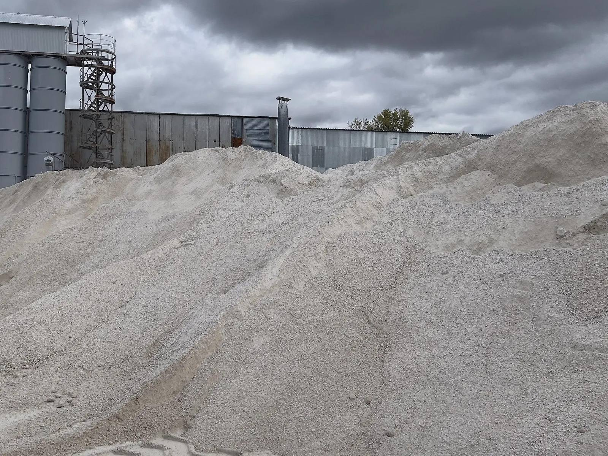

Отсев
Отсев — продукт дробления известняка на фракцию 0-10 мм. Это самостоятельный и востребованный материал для подстилающих слоёв, подсыпки и дорожных работ — и один из самых доступных по цене.
Применение
ГПЩС С8, фракция 0×10 — подходит для производства стеновых и перегородочных блоков, тротуарной плитки, вибропрессованных изделий. Используется как мелкий заполнитель или основной инертный компонент в мелкозернистых смесях.
Оптимальна для рецептур без крупного щебня и для улучшения плотности структуры в составе бетонной смеси. Стабильная гранулометрия, низкий процент глины, контролируемая влажность.
ГПЩС С8 (доломитовая мука, фракция 0×10)
ГПЩС С8 — готовая песчано-щебёночная смесь, относится к категории смесей для устройства дополнительных слоёв оснований автомобильных дорог, основа блоков для низкоэтажного строительства. Это стандартизированный строительный материал с нормируемым зерновым составом, прочностью и морозостойкостью. Применяется как мелкозернистый заполнитель-наполнитель при производстве:
- Бетонных блоков (в т.ч. фундаментных) — отсев фракции 0–10 мм используется как заполнитель вместе с цементом. Блоки на доломите получаются прочными, если соблюдена технология и использован качественный цемент.
- Тротуарной плитки и бордюрного камня — отсев входит в состав смеси как один из основных компонентов.
Важный нюанс про качество
Доломит как заполнитель для блоков часто получает незаслуженную критику: дескать, блоки с ним рассыпаются. На деле проблема не в самом доломите, а в нарушении технологии — низкокачественный цемент, неправильные пропорции, кустарное оборудование. Серьёзные производства делают на доломите прочные блоки, не уступающие песчаным аналогам.
Главный поставщик ГПЩС С8 в регионе — Сокское карьероуправление (АО «СКУ»), расположено в черте Самары на берегу реки Сок. Доломит добывается на северном склоне Сокольих гор (восточный отрог Жигулёвских). Отгрузка идёт автомобильным и водным транспортом — у предприятия три причала.
Отсыпка и укрепление дорог, забутовка
Это основное назначение ГПЩС С8 по ГОСТ.
Как работает:
- Смесь укладывается как дополнительный слой основания под дорожное полотно — между грунтом и основным покрытием. Мелкая фракция (0–10 мм) хорошо уплотняется, создаёт плотный, ровный и водостойкий слой.
- Забутовка — заполнение неровностей, ям и просадок на дороге. Мелкий отсев проникает в пустоты между крупными камнями, уплотняется и создаёт ровную поверхность.
- Укрепление обочин — по ГОСТ смеси С8 также применяются для укрепления обочин автомобильных дорог.
Доломит устойчив к химической агрессии водных растворов солей — это важно для зимних условий, когда дороги обрабатывают реагентами.
Почему именно С8, а не крупный щебень: мелкая фракция легко уплотняется даже без тяжёлой техники, заполняет все пустоты и создаёт монолитный слой. Крупный щебень без мелкого заполнителя «гуляет» и не даёт нужной плотности.
Почему берут у нас
- Официальный дилер АО «Сокское Карьероуправление» — без наценки посредников
- ТТН, паспорт качества и сертификат соответствия ГОСТ на каждую партию
- Доставка автотранспортом (до 40 т) и водным транспортом
Нужен отсев с доставкой на объект? Укажите объём — рассчитаем стоимость сразу с учётом доставки.
Рассчитать доставку →